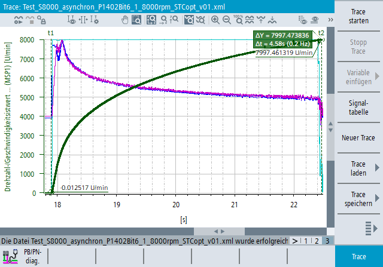

Die Funktion "Trace" ist eine Oszilloskop-Funktion, die Sie bei der Optimierung, Fehlersuche und Maschinenanalyse unterstützt.
Das "Trace"-Widget enthält einen Diagrammbereich, in dem Diagramme (Signalkurven und -skalierungen) mit horizontalen und vertikalen Scrollleisten angezeigt werden.
Im Trace-Diagramm sind Messcursor und Achsenbeschriftungen vorhanden. Sie können die Anzeige über das entsprechende Kontextmenü oder die Optionen in der Symbolleiste mit Tastatur, Maus oder Gesten (Touch) zoomen und scrollen.
Sie können die Funktion "Trace" in Echtzeit verwenden, wenn Sie die Trace-Messung starten und Daten direkt analysieren. Alternativ können Sie die aufgezeichnete Trace-Sitzungsdatei mit den Messdaten laden und analysieren.
Öffnen Sie das Funktionsfenster für Trace im Bedienbereich
"Diagnose > Menüfortschalt-Taste > Trace".
Das angezeigte Diagramm ist ein Zeit-Wert-Liniendiagramm. Die horizontale Achse zeigt die Zeit, die vertikale Achse zeigt die gemessenen Daten (in der Einheit, die dem gemessenen Signal entspricht).
Sie können die Farbe, Linienbreite und Linienart für jedes Signal getrennt konfigurieren.
Die Messwerte sind nur mit horizontalen und vertikalen Linien verbunden, interpolierte (schräge) Linien werden nicht verwendet.
Sie können im Diagramm mit Tastatur, Maus und Touch-Gesten scrollen und zoomen. Sie können auch Messcursor benutzen.
Für die Konfiguration der grafischen Anzeige von Signalkurven und Skalen können die Signaltabelle, das Kontextmenü und die Funktionen der Symbolleiste verwendet werden.
Es werden Trace-Dateien aus den folgenden Quellen im XML-Format unterstützt, wenn Sie in die Trace-Applikation geladen werden.
Dateiquelle (XML) | Laden und Visualisieren | Laden und als Trace-Konfiguration verwenden |
|---|---|---|
Analyze MyMachine /SINUMERIK Tuning Center | Ja | Ja |
SINUMERIK Operate | Ja | Ja |
SINUMERIK Operate Commissioning | Ja | Ja |
SinuCom NC | Ja | Nein |
| Hinweis |
Trace-Sitzungsdateien, die mit der SINUMERIK Operate-Funktion Trace Klassik oder mit SinuCom NC erzeugt wurden, können im Kompatibilitätsmodus geladen werden. Diese Konfigurationen sind nicht editierbar und stellen nicht die komplette Funktonalität der Trace-Applikation zur Verfügung. |
Laden Sie eine vorhandene Trace-Messung oder erstellen Sie eine neue Trace-Konfiguration.
Arbeiten Sie mit Signalgruppen und starten Sie die Trace-Aufzeichnung.
Arbeiten Sie mit dem Trace-Diagramm und verwenden Sie die Kontextmenüfunktionen für die Diagrammanalyse.
Speichern Sie Ihre Trace-Konfiguration.
Siehe auch:
Signaltabelle
Trace-Konfiguration erstellen
Trace-Sitzungsdatei laden
Trace-Messung
Mit dem Trace-Diagramm arbeiten
Kontextmenü-Funktionen für Diagrammanalyse verwenden